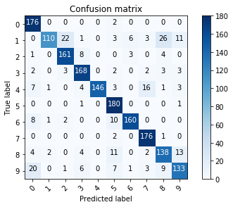

In [13]: runfile('/home/antoniomanuelfr/Documentos/Computacion-y-Sistemas-Inteligentes/AA/Practicas/Practica3/RegresionLogistica_optDigits_ajuste_hparametros.py', wdir='/home/antoniomanuelfr/Documentos/Computacion-y-Sistemas-Inteligentes/AA/Practicas/Practica3')
/home/antoniomanuelfr/anaconda3/lib/python3.6/site-packages/sklearn/utils/validation.py:475: DataConversionWarning: Data with input dtype int32 was converted to float64 by StandardScaler.
warnings.warn(msg, DataConversionWarning)
Best parameters set found on development set:
{'C': 0.9, 'penalty': 'l1', 'solver': 'liblinear'}
Grid scores on development set:
0.947 (+/-0.025) for {'C': 0.9, 'penalty': 'l1', 'solver': 'liblinear'}
0.945 (+/-0.018) for {'C': 0.5, 'penalty': 'l1', 'solver': 'liblinear'}
0.930 (+/-0.013) for {'C': 0.2, 'penalty': 'l1', 'solver': 'liblinear'}
0.927 (+/-0.015) for {'C': 0.15, 'penalty': 'l1', 'solver': 'liblinear'}
0.916 (+/-0.016) for {'C': 0.125, 'penalty': 'l1', 'solver': 'liblinear'}
0.900 (+/-0.031) for {'C': 0.1, 'penalty': 'l1', 'solver': 'liblinear'}
0.893 (+/-0.026) for {'C': 0.9, 'penalty': 'l2', 'solver': 'newton-cg'}
0.891 (+/-0.028) for {'C': 0.5, 'penalty': 'l2', 'solver': 'newton-cg'}
0.894 (+/-0.028) for {'C': 0.2, 'penalty': 'l2', 'solver': 'newton-cg'}
0.895 (+/-0.025) for {'C': 0.15, 'penalty': 'l2', 'solver': 'newton-cg'}
0.895 (+/-0.027) for {'C': 0.125, 'penalty': 'l2', 'solver': 'newton-cg'}
0.896 (+/-0.024) for {'C': 0.1, 'penalty': 'l2', 'solver': 'newton-cg'}
END OF TUNNING PARAMETERS!!!
The model is trained on the full train set and with best parameters
The model is going to be saved in: LogicRegresion_model.pkl
In [14]: runfile('/home/antoniomanuelfr/Documentos/Computacion-y-Sistemas-Inteligentes/AA/Practicas/Practica3/RegresionLogistica_optDigits_ajuste_modelo.py', wdir='/home/antoniomanuelfr/Documentos/Computacion-y-Sistemas-Inteligentes/AA/Practicas/Practica3')
/home/antoniomanuelfr/anaconda3/lib/python3.6/site-packages/sklearn/utils/validation.py:475: DataConversionWarning: Data with input dtype int32 was converted to float64 by StandardScaler.
warnings.warn(msg, DataConversionWarning)
The model is trained on the full train set and with best parameters
The scores are computed with full test set
precision recall f1-score support
0 0.81 0.99 0.89 178
1 0.96 0.60 0.74 182
2 0.85 0.91 0.88 177
3 0.88 0.92 0.90 183
4 1.00 0.81 0.89 181
5 0.82 0.99 0.90 182
6 0.94 0.88 0.91 181
7 0.87 0.98 0.92 179
8 0.76 0.79 0.78 174
9 0.81 0.74 0.77 180
avg / total 0.87 0.86 0.86 1797
Confusion Matrix
Confusion matrix, without normalization
[[176 0 0 0 0 2 0 0 0 0]
[ 0 110 22 1 0 3 6 3 26 11]
[ 1 0 161 8 0 0 3 0 4 0]
[ 2 0 3 168 0 2 0 2 3 3]
[ 7 1 0 4 146 3 0 16 1 3]
[ 0 0 0 1 0 180 0 0 0 1]
[ 8 1 2 0 0 10 160 0 0 0]
[ 0 0 0 0 0 2 0 176 1 0]
[ 4 2 0 4 0 11 0 2 138 13]
[ 20 0 1 6 0 7 1 3 9 133]]

In [15]: